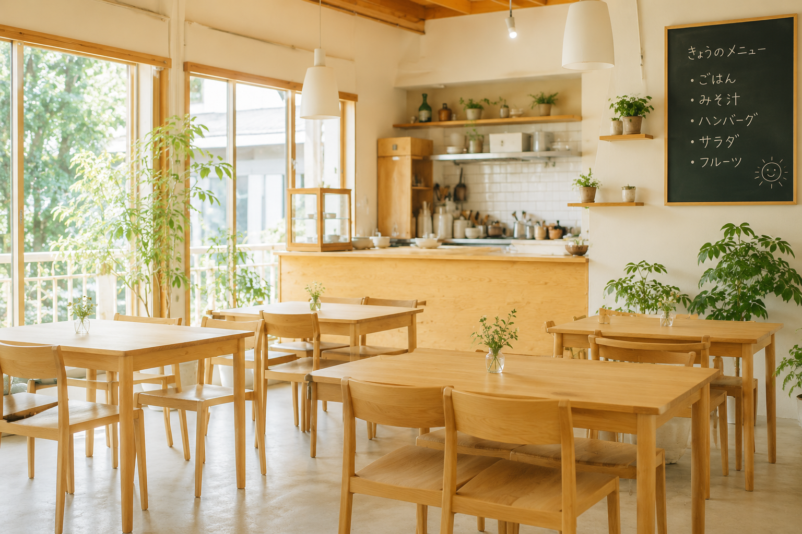
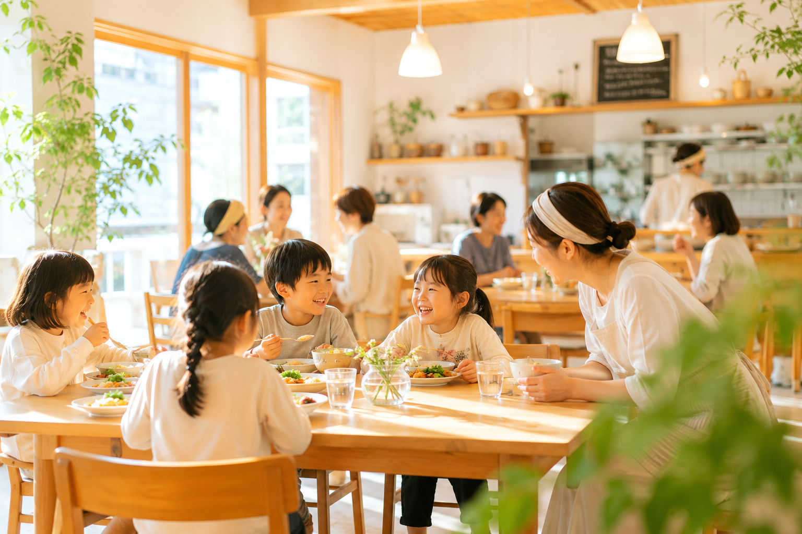
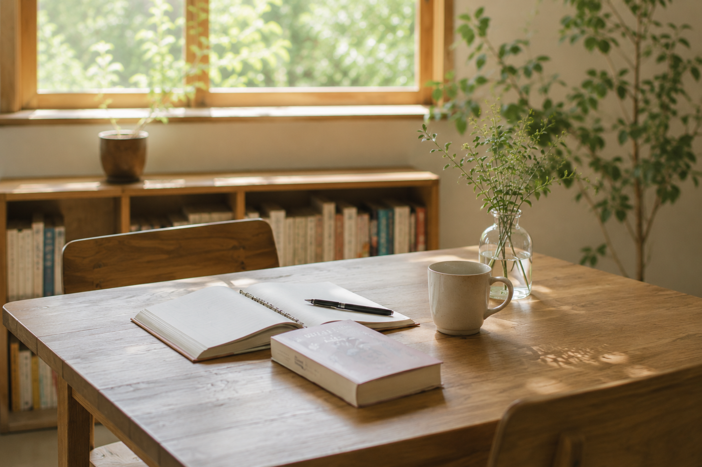
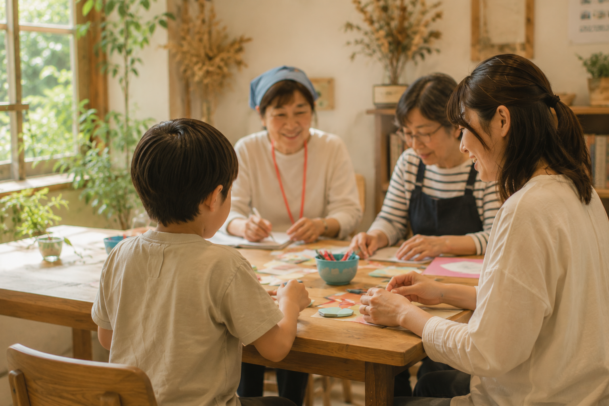
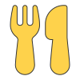
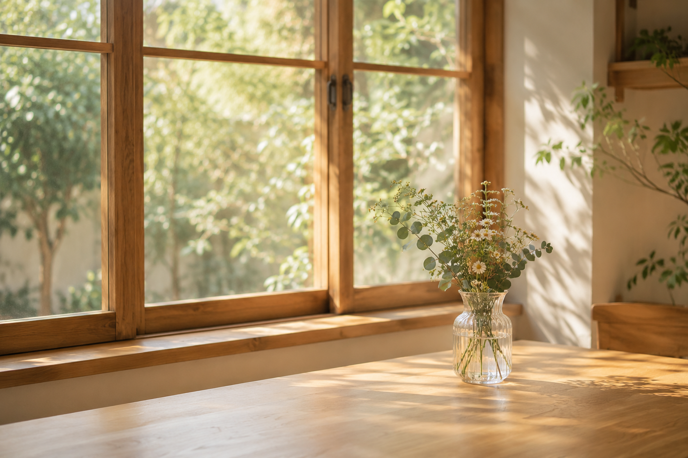

ご飯を囲んで緩やかに
つながる場所
みんなの食堂は子どもから大人まで誰でも気軽に立ち寄れる場所です。
ご飯を食べたり、宿題をしたり、誰かと少しお話したり近すぎないけれど、安心して過ごせる場所を目指しています。

食堂での過ごし方
- Our Moments -
-
食べる
ご飯を囲みながらゆっくり過ごせる時間。 放課後に立ち寄れる地域の食堂として開いています。
-

過ごす
一人で宿題をしたり、遊んだり、本を読んだり。 それぞれのペースで自由に過ごせる場所です。
-

つながる
この場所をきっかけに自然な交流が生まれ、安心して過ごせる居場所づくりを目指しています。
ご利用案内
- Information -
-
利用できる方
小学生〜大学生、地域のみなさんもご利用いただけます。
-

食事料金
- 中学生以下：
- 無料
- 大学生以下：
- ３００円
- 大人：
- ８００円
-
スペース利用
スペースの利用は無料です。宿題や自習にもご利用いただけます。
-
営業時間
- 平日：
- １５時〜２０時
休日イベントはお知らせをご覧ください
はじめての方も安心してご利用いただけるよう、スタッフがお待ちしています。
アクセス・店舗案内
- Location -
-
みんなの食堂 中津
- 住所
- 大阪府大阪市北区中津XXX
- アクセス
-
- 阪急「中津駅」より徒歩4分
- Osaka Metro御堂筋線「中津駅」より徒歩7分
- JR「大阪駅」より徒歩15分
- 営業時間
-
月〜土 15:00〜20:00
※不定休あり。お知らせをご確認ください。
- 特徴
- 学校帰りに立ち寄れる、学生利用の多い店舗です。自習や食事など自由に過ごせます。
-
みんなの食堂 十三
- 住所
- 大阪府大阪市淀川区十三本町XXX
- アクセス
-
- 阪急「十三駅」西口より徒歩5分
- 十三商店街より徒歩2分
- 阪急「大阪梅田駅」より電車で約6分
- 営業時間
-
月〜土 15:00〜20:00
※不定休あり。お知らせをご確認ください。
- 特徴
- 親子イベントや交流会を開催しています。地域の方が気軽に集える店舗です。
誰かと少しお話をしたり、静かに過ごしたり。 過ごし方は人それぞれです。 ご飯を食べることをきっかけに、誰かと少しつながれる。
みんなの食堂が、子どもたちや地域のみなさんにとって安心できる居場所のひとつになれたら嬉しいです。
